전산응용기계제도기능사 (2008-10-05 기출문제)
1과목: 기계재료 및 요소
1. 아공석강에서는 A3,2,1 변태점보다 30~50℃ 높게 하고, 공석강, 과공석강은 A1변태점보다 30~50℃ 높게 가열하여 적당 시간 유지 후, 노에서 서서히 냉각시키는 열처리는?
- 저온풀림
- 완전풀림
- 중간풀림
- 항온풀림
(정답률: 27%)

2. 벨트 전동의 일반적인 장점으로 볼 수 없는 것은?
- 원동축의 진동, 충격을 피동축에 거의 전달하지 않는다.
- 미끄럼이 안전장치의 역할을 하여 원활한 동력 전달이 가능하다.
- 축간 거리가 먼 경우에도 동력 전달이 가능하다.
- 일정한 속도비를 얻을 수 있어 정확한 동력 전달이 된다.
(정답률: 34%)
3. 합금 공구강의 KS 재료 기호는?
- SKH
- SPS
- STS
- GC
(정답률: 71%)
4. 일명 우드러프 키라고도 하며, 키와 키 홈 등이 모두 가공하기 쉽고, 키와 보스를 결합하는 과정에서 자동적으로 키가 자리를 잡을 수 있는 장점이 있으며 자동차, 공작기계 등에 널리 사용되는 키는?
- 성크 키
- 접선 키
- 반달 키
- 스플라인
(정답률: 42%)
5. 주철은 고온에서 가열과 냉각을 반복하면 부피가 불어나, 변형이나 균열이 일어나서 강도나 수명을 저하시키는 원인이 되는 것은?
- 주철의 자연 시효
- 주철의 자기 풀림
- 주철의 성장
- 주철의 시효 경화
(정답률: 47%)
6. 선박의 복수 기관에 많이 사용되며, 용접용으로도 쓰이는 것으로서 7:3황동에 1% 내외의 주석을 함유한 황동은?
- 켈밋 합금
- 쾌삭 황동
- 델타메탈
- 애드미럴티 황동
(정답률: 43%)
7. 다음 중 형상 기억 효과를 나타내는 합금은?
- Ti-Ni계 합금
- Fe-Al계 합금
- Ni-Cr계 합금
- Pb-Sb계 합금
(정답률: 51%)
8. 단면적이 10㎟인 봉에 길이방향으로 100N의 인장력이 작용할 때 발생하는 인장응력은 몇 N/㎟ 인가?
- 5
- 10
- 80
- 99.6
(정답률: 85%)
9. 전기에너지를 이용하여 제동력을 가해 주는 브레이크는?
- 블록 브레이크
- 밴드 브레이크
- 디스크 브레이크
- 전자 브레이크
(정답률: 89%)
10. 한 쌍의 기어 잇수가 40 및 60이고 두 축 간의 거리는 100㎜일 때 기어의 모듈은?
- 1
- 2
- 3
- 4
(정답률: 67%)
2과목: 기계가공법 및 안전관리
11. 나사의 사용 목적에 따라 분류할 때 용도가 다른 것은?
- 사다리꼴 나사
- 삼각나사
- 볼나사
- 사각나사
(정답률: 36%)
12. 주조성이 좋으며 열처리에 의하여 기계적 성질을 개량할 수 있고 라우탈(Lautal)이 대표적인 합금은?
- Al - Cu계 합금
- Al - Si계 합금
- Al - Cu- Si계 합금
- Al - Mg -Si계 합금
(정답률: 53%)
13. 베어링메탈의 재료가 구비해야 할 조건이 아닌 것은?
- 녹아 붙지 않을 것
- 마멸이 적을 것
- 내식성이 작을 것
- 피로 강도가 클 것
(정답률: 57%)
14. 기계구조용 탄소강 SM35C에서 35란 숫자는 무엇을 나타내는가?
- 인장강도
- 망간함유량
- 탄성계수
- 탄소함유량
(정답률: 78%)
15. 스프링을 용도에 따라 분류할 때 진동이나 충격을 흡수하는 곳에 사용하는 스프링은?
- 자동차의 현가장치
- 시계 태엽
- 압력 게이지
- 총의 방아쇠
(정답률: 68%)
16. 공작물, 미디어(media), 공작액, 콤파운드를 상자 속에 넣고 회전 또는 진동시키면 공작물과 연삭입자가 충돌하여 공작물 표면에 요철을 없애고 매끈한 다듬질면을 얻는 가공방법은?
- 브로칭
- 배럴가공
- 숏피닝
- 래핑
(정답률: 42%)
17. 밀링 머신에서 지름 60㎜의 초경합금 커터를 사용하여 22m/min의 절삭속도로 절삭하는 경우, 매분 이송량은 약 몇 ㎜인가? (단, 날 수는 12개이고, 한 날당 이송거리는 0.2㎜이다.)
- 250
- 280
- 310
- 324
(정답률: 43%)
18. 연삭기에서 숫돌의 원주속도 V=1500m/min, 연삭력 P=20kgf 이다. 이 때 소요동력이 7.5kW라면 연삭기의 효율은 약 몇 %인가?
- 46
- 50
- 65
- 75
(정답률: 30%)
19. 밀링 작업에 대한 설명으로 틀린 것은?
- 커터의 회전방향과 가공물의 이송이 반대인 가공방법을 상향절삭이라 한다.
- 가공 재료에 따라 알맞은 절삭속도를 정한다.
- 하향 절삭 작업시에는 백래시를 제거하여야 한다.
- 절삭면의 표면거칠기는 이송을 크게하고 커터의 지름이 작을수록 좋아진다.
(정답률: 59%)
20. 연삭작업에서 연삭력 p=10kgf, 연삭속도 v=75m/s일 때 연삭동력은 몇 PS인가? (단, 기계적 효율은 무시한다.)
- 3
- 5
- 7
- 10
(정답률: 19%)
21. 구멍용 한계게이지가 아닌 것은?
- 원통형 플러그 게이지
- 테보 게이지
- 봉 게이지
- 링 게이지
(정답률: 34%)
22. 길이의 기준으로 사용되고 있는 평행 단도기로서 1개 또는 2개 이상의 조합으로 사용되며, 다른 측정기의 교정 등에 사용되는 측정기는?
- 컴비네이션 세트
- 마이크로미터
- 다이얼 게이지
- 게이지 블록
(정답률: 44%)
23. 게이지 블록의 다듬질 가공에 가장 적합한 방법은?
- 버핑
- 호닝
- 래핑
- 슈퍼 피니싱
(정답률: 46%)
24. 공구 재료에서 고속도강의 주성분에 해당하지 않는 것은?
- 탄화 티타늄
- 텅스텐
- 크롬
- 바나듐
(정답률: 60%)
25. 일감을 -20℃ ~ -150℃정도 냉각시켜 절삭하면 공구의 마멸이 적어지고 절삭성능이 향상되는 재료가 있다. 이러한 방법으로 절삭 가공하는 방법을 무엇이라 하는가?
- 저온절삭
- 고온절삭
- 상온절삭
- 열간절삭
(정답률: 84%)
3과목: 기계제도
26. 한국산업규격에서 규정하고 있는 표면 거칠기를 구하는 종류에 속하지 않는 것은?
- 최대 높이(Ry)
- 10점 평균 거칠기(Rz)
- 산술 평균 거칠기(Ra)
- 회전면 평균 거칠기(Rc)
(정답률: 65%)
27. 아래 그림과 같이 도형을 표시하는 투상도의 명칭은?
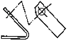
- 보조 투상도
- 부분 투상도
- 국부 투상도
- 회전 투상도
(정답률: 65%)
28. 기하 공차의 종류와 기호 설명이 틀린 것은?
- ／／ : 평행도 공차
- ↗ : 원주 흔들림 공차
- ○ : 동축도 또는 등심도 공차
- ⊥ : 직각도 공차
(정답률: 80%)
29. 40g6 축을 가공할 때 허용한계치수가 맞게 계산된 것은? (단, IT6의 공차값 T=16㎛, 40g6 축에 대한 기초가 되는 치수 허용차 값 i=-9㎛)
- 위 치수허용차=39.991, 아래 치수허용차=39.975
- 위 치수허용차=40.009, 아래 치수허용차=40.016
- 위 치수허용차=39.975, 아래 치수허용차=39.964
- 위 치수허용차=40.016, 아래 치수허용차=40.025
(정답률: 45%)
30. 다음의 두 투상도에 사용 된 단면도는?
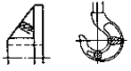
- 부분 단면도
- 한쪽 단면도
- 전 단면도
- 회전 단면도
(정답률: 73%)
31. 축과 구멍의 공차 값이 아래 보기와 같을 때 이러한 끼워맞춤을 무엇이라 하는가?
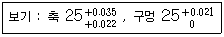
- 헐거운 끼워 맞춤
- 억지 끼워 맞춤
- 중간 끼워 맞춤
- 슬라이딩 끼워 맞춤
(정답률: 63%)
32. 도면에서 도면의 관리상 필요한 사항(도면번호, 도명, 책임자, 척도, 투상법 등)과 도면 내에 있는 내용에 관한 사항을 모아서 기입하는 것을 무엇이라 하는가?
- 주서란
- 요목표
- 표제란
- 부품란
(정답률: 84%)
33. 제도에 사용하는 선 가는 선, 굵은 선, 아주 굵은 선들의 선 굵기 비율로 옳은 것은?
- 1 : 2 : 4
- 1 : 2.5 : 5
- 1 : 3 : 6
- 1 : 3.5 : 7
(정답률: 74%)
34. 치수기입에 관한 설명으로 틀린 것은?
- 수직방향의 치수선에 대해서는 투상도의 오른쪽에서 읽을 수 있도록 기입한다.
- 수치는 치수선 중앙의 위에 약간 띄어서 쓴다.
- 비례척이 아닌 경우는 치수 수치 위에 선을 긋는다.
- 한 도면내의 치수는 일정한 크기로 쓴다.
(정답률: 65%)
35. 다음과 같은 등각 투상도의 평면도를 옳게 그린 것은? (제3각법의 경우)
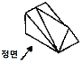
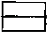
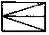
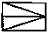
(정답률: 77%)
36. 제도의 목적을 달성하기 위하여 도면이 구비하여야 할 기본요건이 아닌 것은?
- 면의 표면거칠기, 재료선택, 가공방법 등의 정보
- 도면 작성방법에 있어서 설계자 임의의 창의성
- 무역 및 기술의 국제 교류를 위한 국제적 통용성
- 대상물의 도형, 크기, 모양, 자세, 위치의 정보
(정답률: 81%)
37. 구멍기준식 끼워맞춤에 사용되는 기준구멍의 공차범위는?
- h5 ~ h9
- H5 ~ H9
- h6 ~ h10
- H6 ~ H10
(정답률: 42%)
38. 다음과 같은 제3각법 정투상도에서의 평면도에 해당하는 것은?
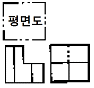
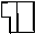
(정답률: 44%)
39. 스케치하는 방법이 아닌 것은?
- 본뜨기법
- 사진 촬영법
- 청사진에 의한 방법
- 프리핸드 방법
(정답률: 61%)
40. 원호의 길이를 나타내는 치수 보조기호는?
- □50
- ø50
- 50( 또는 ⌢50)
- t50
(정답률: 71%)
41. 가공에 의한 커터의 줄무늬가 여러 방향으로 교차 또는 무방향을 나타낸 기호를 바르게 표시한 것은?
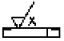
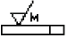
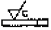
(정답률: 72%)
42. 다음 그림에 표시된 기하공차 설명으로 옳은 것은?
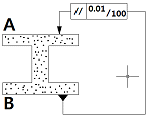
- 기준면 A의 길이는 100mm이고, B면은 이것과의 평행도가 0.01mm이다.
- 길이 100mm인 기준면 A와 B면의 평행도는 0.01mm이다.
- A면은 기준면 B와 평행하되 부분구간 100mm당의 평행도는 0.01mm이다.
- B면은 기준면 A와 평행하되 부분구간 100mm당의 평행도는 0.01mm이다.
(정답률: 54%)
43. 부품도에서 어느 일부분에만 도금을 하려고 한다. 이를 지시하기 위해 그 범위를 지시하는 선은?
- 가는 2점쇄선
- 파선
- 굵은 1점쇄선
- 가는 실선
(정답률: 51%)
44. 제1각법의 설명으로 틀린 것은?
- 평면도는 정면도 아래에 배치한다.
- 눈 → 물체 → 투상면의 순서가 된다.
- 물체를 투상면의 앞쪽에 놓고 투상한다.
- 좌측면도는 정면도 좌측에 배치한다.
(정답률: 59%)
45. 인접 부분을 참고로 표시하는데 쓰이는 가상선으로 사용하는 선은 종류는?
- 가는 2점쇄선
- 가는 실선
- 숨은선
- 가는 1점쇄선
(정답률: 59%)
46. 다음 그림은 어떤 밸브에 대한 도시 기호인가?
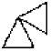
- 글로브 밸브
- 앵글 밸브
- 체크 밸브
- 게이트 밸브
(정답률: 73%)
47. 겹판 스프링 제도시 무하중 상태를 나타내는 선의 종류는?
- 가는 실선
- 가는 파선
- 가상선
- 파단선
(정답률: 35%)
48. 기어 제도방법에 대한 설명 중 틀린 것은?
- 스퍼기어의 축방향에서 본 이끝원은 굵은 실선으로 그린다.
- 축 방향에서 본 맞물리는 한 쌍 기어의 도시에서 맞물림부의 이끝원은 모두 굵은 실선으로 그린다.
- 축 직각방향에서 본 헬리컬 기어의 잇줄 방향은 3개의 가는 실선으로 그린다.
- 스퍼기어의 축 방향에서 본 피치원은 가는 2점쇄선으로 그린다.
(정답률: 65%)
49. 축의 도시 방법에 대한 설명으로 틀린 것은?
- 가공 방향을 고려하여 도시한다.
- 축은 길이 방향으로 절단하여 온 단면도로 표현하지 않는다.
- 빗줄 널링의 경우에는 축선에 대하여 30°로 엇갈리게 그린다.
- 긴 축은 중간을 파단하여 짧게 표현하고, 치수 기입은 도면상에 그려진 길이로 나타낸다.
(정답률: 52%)
50. 큰 동력을 일정한 속도비로 정확하게 전달할 수 있는 기계요소는?
- 마찰차
- 기어
- 벨트
- 로프
(정답률: 63%)
51. 구름 베어링에서 호칭번호가 “6022P6"이다. 안지름은 몇 ㎜인가?
- 22
- 35
- 60
- 110
(정답률: 75%)
52. 키의 호칭방법에 포함되지 않는 것은?
- 종류 및 호칭치수
- 길이
- 인장강도
- 재료
(정답률: 62%)
53. 관용 테이퍼 수나의 ISO규격 기호는?
- R
- M
- G
- E
(정답률: 65%)
54. 나사의 도시방법 중 옳은 것은?
- 수나사와 암나사의 골지름은 굵은 실선으로 그린다.
- 암나사의 안지름은 가는 실선으로 그린다.
- 완전 나사부와 불완전 나사부의 경계선은 굵은실선으로 그린다.
- 가려서 보이지 않는 부분의 나사부는 가는 1점쇄선으로 그린다.
(정답률: 63%)
55. 평벨트 풀리의 도시방법으로 틀린 것은?
- 벨트풀리는 축 직각방향의 투상을 측면도로 한다.
- 벨트풀리와 같이 대칭형인 것은 그 일부분만을 도시한다.
- 암은 길이방향으로 절단하여 단면으로 도시하지 않는다.
- 암의 단면도는 암의 안이나 밖에 회전단면을 도시한다.
(정답률: 42%)
56. 용접부의 보조기호 중 현장용접 기호는?
(정답률: 78%)
57. CAD 시스템의 입력장치가 아닌 것은?
- 자판(keyboard)
- 마우스(mouse)
- 플로터(plotter)
- 라이트 펜(light pen)
(정답률: 85%)
58. 화면 표시장치 각각의 영역에서 판독 위치, 입력가능 위치 및 입력상태 등을 표현하여 주는 표식은?
- 좌표 원점(origin point)
- 도면 요소(entity)
- 커서(cursor)
- 대화 상자(dialogue box)
(정답률: 53%)
59. CAD의 기하학적 도형 표현 방법에서 서피스(surface) 모델의 특징을 바르게 설명한 것은?
- 은선 제거가 불가능하다.
- NC 데이터를 생성할 수가 있다.
- 물리적 성질을 계산하기 쉽다.
- 단면도 작성이 불가능하다.
(정답률: 50%)
60. CAD 시스템에서 마지막 입력 점을 기준으로 다음 점까지의 직선거리와 기준 직교축과 그 직선이 이루는 각도로 입력하는 좌표계는?
- 절대 좌표계
- 구면 좌표계
- 원통 좌표계
- 상대 극좌표계
(정답률: 78%)
따라서, 이러한 강종을 열처리할 때는 A3,2,1 변태점보다 높게 가열하여 경도를 높이고, 적당 시간 동안 유지한 후 노에서 서서히 냉각시키는 것이 일반적입니다. 이러한 열처리 방법을 통해 강종 내부의 구조가 완전히 풀리게 되어 경도가 낮아지고, 가공성이 향상됩니다. 따라서 정답은 "완전풀림"입니다.